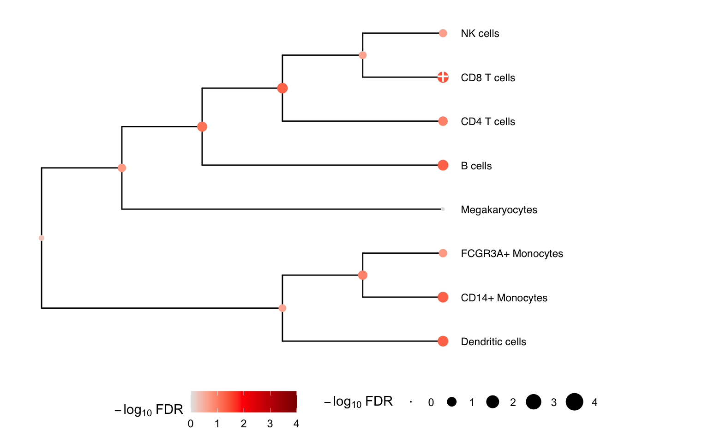
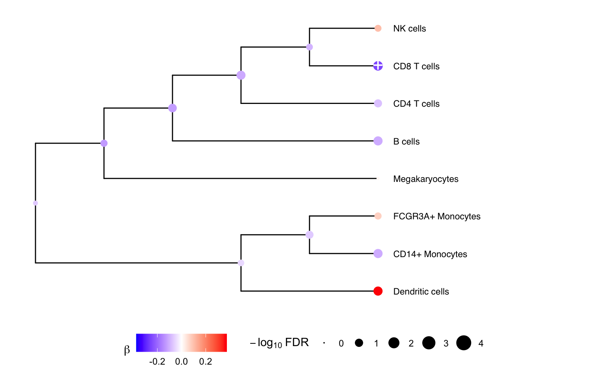
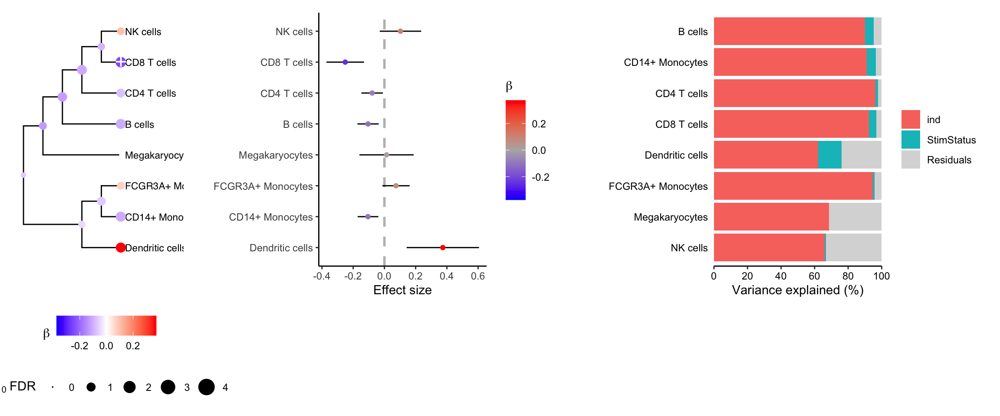

Using crumblr in practice
Developed by Gabriel Hoffman
Run on 2025-01-14 10:04:19.91422
Source:vignettes/crumblr.Rmd
crumblr.RmdChanges in cell type composition play an important role in health and
disease. Recent advances in single cell technology have enabled
measurement of cell type composition at increasing cell lineage
resolution across large cohorts of individuals. Yet this raises new
challenges for statistical analysis of these compositional data to
identify changes associated with a phenotype. We introduce
crumblr, a scalable statistical method for analyzing count
ratio data using precision-weighted linear models incorporating random
effects for complex study designs. Uniquely, crumblr
performs tests of association at multiple levels of the cell lineage
hierarchy using multivariate regression to increase power over tests of
a single cell component. In simulations, crumblr increases
power compared to existing methods, while controlling the false positive
rate.
Here we consider counts for 8 cell types from quantified using single cell RNA-seq data from unstimulated and interferon β stimulated PBMCs from 8 subjects (Kang, et al., 2018).
The functions here incorporate the precision weights:
Installation
To install this package, start R and enter:
# 1) Make sure Bioconductor is installed
if (!require("BiocManager", quietly = TRUE)) {
install.packages("BiocManager")
}
# 2) Install crumblr and dependencies:
# From Bioconductor
BiocManager::install("crumblr")
# or from GitHub
devtools::install_github("DiseaseNeurogenomics/crumblr")Process data
Here we evaluate whether the observed cell proportions change in response to interferon β. Given the results here, we cannot reject the null hypothesis that interferon β does not affect the cell type proportions.
library(crumblr)
# Load cell counts, clustering and metadata
# from Kang, et al. (2018) https://doi.org/10.1038/nbt.4042
data(IFNCellCounts)
# Apply crumblr transformation
# cobj is an EList object compatable with limma workflow
# cobj$E stores transformed values
# cobj$weights stores precision weights
# corresponding to the regularized inverse variance
cobj <- crumblr( df_cellCounts )Variance partitioning
Decomposing the variance illustrates that more variation is explained by subject than stimulation status.
library(variancePartition)
# Partition variance into components for Subject (i.e. ind)
# and stimulation status, and residual variation
form = ~ (1|ind) + (1|StimStatus)
vp <- fitExtractVarPartModel(cobj, form, info)
# Plot variance fractions
fig.vp = plotPercentBars(vp)
fig.vp
PCA
Performing PCA on the transformed cell counts indicates that the samples cluster based on subject rather than stimulation status.
library(ggplot2)
# Perform PCA
# use crumblr::standardize() to get values with
# approximately equal sampling variance,
# which is a key property for downstream PCA and clustering analysis.
pca <- prcomp(t(standardize(cobj)))
# merge with metadata
df_pca <- merge(pca$x, info, by = "row.names")
# Plot PCA
# color by Subject
# shape by Stimulated vs unstimulated
ggplot(df_pca, aes(PC1, PC2, color = as.character(ind), shape = StimStatus)) +
geom_point(size = 3) +
theme_classic() +
theme(aspect.ratio = 1) +
scale_color_discrete(name = "Subject") +
xlab("PC1") +
ylab("PC2")

Differential testing
# Use variancePartition workflow to analyze each cell type
# Perform regression on each cell type separately
# then use eBayes to shrink residual variance
# Also compatible with limma::lmFit()
fit <- dream(cobj, ~ StimStatus + ind, info)
fit <- eBayes(fit)
# Extract results for each cell type
topTable(fit, coef = "StimStatusstim", number = Inf)## logFC AveExpr t P.Value adj.P.Val B
## CD8 T cells -0.25085170 0.0857175 -4.0787416 0.002436375 0.01949100 -1.279815
## Dendritic cells 0.37386979 -2.1849234 3.1619195 0.010692544 0.02738587 -2.638507
## CD14+ Monocytes -0.10525402 1.2698117 -3.1226341 0.011413912 0.02738587 -2.709377
## B cells -0.10478652 0.5516882 -3.0134349 0.013692935 0.02738587 -2.940542
## CD4 T cells -0.07840101 2.0201947 -2.2318104 0.050869691 0.08139151 -4.128069
## FCGR3A+ Monocytes 0.07425165 -0.2567492 1.6647681 0.128337022 0.17111603 -4.935304
## NK cells 0.10270672 0.3797777 1.5181860 0.161321761 0.18436773 -5.247806
## Megakaryocytes 0.01377768 -1.8655172 0.1555131 0.879651456 0.87965146 -6.198336Multivariate testing along a tree
We can gain power by jointly testing multiple cell types using a
multivariate statistical model, instead of testing one cell type at a
time. Here we construct a hierarchical clustering between cell types
based on gene expression from pseudobulk, and perform a multivariate
test for each internal node of the tree based on its leaf nodes. The
results for the leaves are the same as from topTable()
above. At each internal node treeTest() performs a fixed
effects meta-analysis of the coefficients of the leaves while modeling
the covariance between coefficient estimates. In the backend, this is
implemented using variancePartition::mvTest() and remaCor
package.
# Perform multivariate test across the hierarchy
res <- treeTest(fit, cobj, hcl, coef = "StimStatusstim")
# Plot hierarchy and testing results
plotTreeTest(res)
# Plot hierarchy and regression coefficients
plotTreeTestBeta(res)
Combined plotting
plotTreeTestBeta(res) +
theme(legend.position="bottom", legend.box = "vertical") |
plotForest(res, hide=FALSE) |
fig.vp